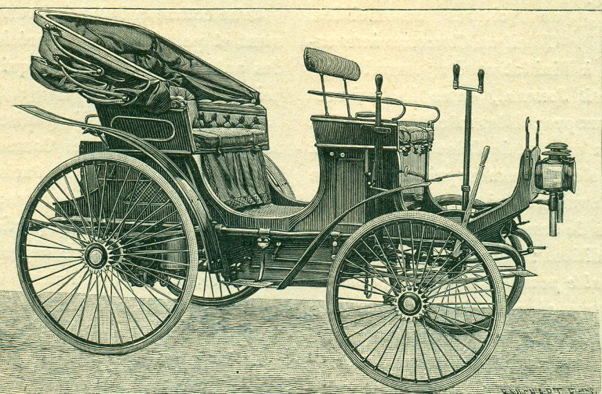
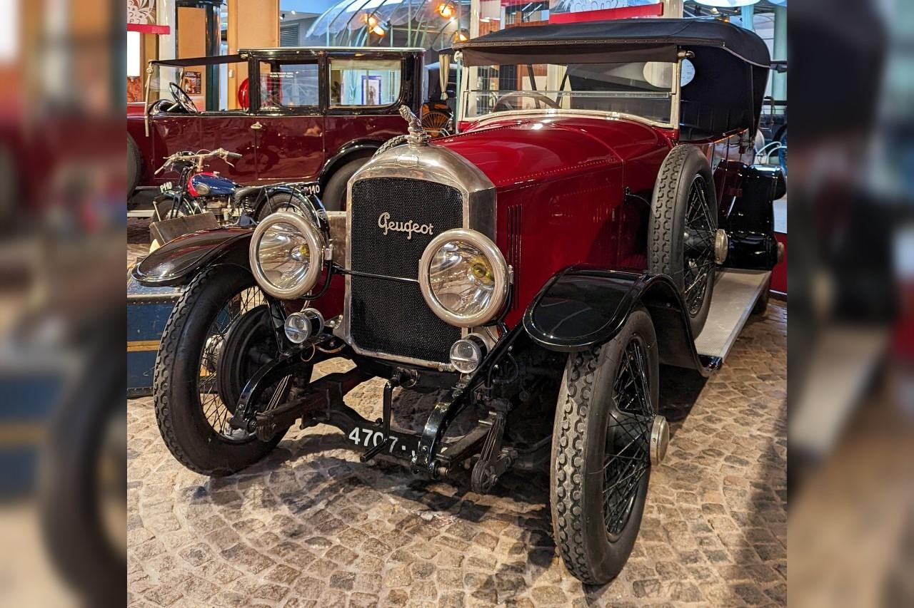
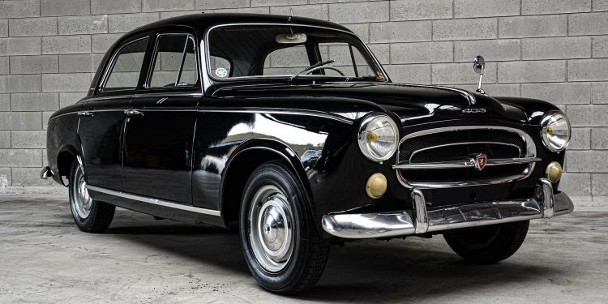
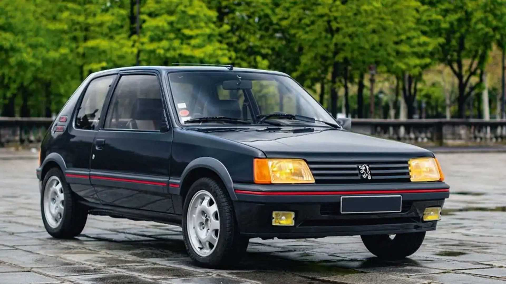

Notre Histoire
Peugeot, c'est plus de 200 ans d'innovations, de performances et de qualité, une entreprise qui a su se réinventer tout en conservant un héritage fort. De ses débuts modestes dans la fabrication d'objets métalliques à son rôle actuel de leader mondial de l'automobile, chaque étape de l'histoire de la marque témoigne de son ambition et de son engagement envers l'excellence.
Les Premiers Pas de Peugeot : Une Histoire Familiale (1810 - 1889)
La saga Peugeot débute en 1810, lorsque Jean-Pierre Peugeot, un industriel de Franche-Comté, fonde l'entreprise dans le village de Sochaux. L'activité initiale de l'entreprise est la fabrication de moulins à café, de scies et d'objets métalliques. Cette entreprise familiale est marquée par une volonté de perfection dans le travail du métal.
En 1830, Peugeot se diversifie dans la fabrication de bicyclettes, devenant l'un des premiers fabricants à intégrer des roues métalliques. Les années 1880 sont un tournant majeur, avec l'arrivée du moteur à vapeur, Peugeot entre dans le secteur automobile. En 1889, l'entreprise dévoile son premier modèle automobile, la Type 2, propulsé par un moteur à essence, faisant ainsi ses premiers pas dans l'automobile moderne.
La Belle Époque : L'essor de l'automobile (1900 - 1940)
Au début du 20ème siècle, Peugeot devient l'un des pionniers de l'automobile, en fabriquant des modèles de plus en plus sophistiqués. En 1904, Peugeot introduit son premier moteur à essence à quatre cylindres, symbolisant l'engagement de la marque pour l'innovation technique. Dès 1910, la marque fait une entrée remarquable dans la compétition automobile en remportant plusieurs courses prestigieuses.
Dans les années 1920 et 1930, Peugeot devient l'un des principaux constructeurs européens avec des modèles comme la Peugeot 201 et 302, qui deviendront des symboles de l'automobile en France. La 201, lancée en 1929, est la première voiture Peugeot produite en série. L'entreprise commence à se structurer et à se diversifier, notamment en lançant une ligne de véhicules utilitaires.
Les Années de Croissance et de Modernité (1945 - 1980)
Après la Seconde Guerre mondiale, Peugeot, comme toute l'industrie automobile, se retrouve confronté à la nécessité de reconstruire et d'innover. En 1955, la marque dévoile la 403, un modèle populaire qui remporte un immense succès. Elle incarne l'après-guerre et devient un symbole de la France des années 50.
Dans les années 1960, Peugeot continue d'innover avec la Peugeot 404, un modèle haut de gamme qui allie confort, style et sécurité. Ce modèle est également l'un des premiers véhicules à disposer d'un moteur à injection directe, une véritable avancée technologique.
En 1974, Peugeot fait un grand pas en avant avec la fusion de Peugeot et Citroën pour former le groupe PSA, une initiative stratégique qui lui permet de diversifier encore plus son offre et d'étendre sa présence internationale.
Un Nouveau Siècle : Design, Technologie et Engagement Écologique (1980 - 2020)
Les années 1980 et 1990 voient l’émergence de la Peugeot 205, une petite citadine qui devient une icône de la marque. Ce modèle, moderne et sportif, s'impose rapidement comme l'une des voitures les plus vendues en Europe et contribue à redéfinir l'image de Peugeot.
En 2002, la 307 remplace la 306 et se distingue par son design audacieux, son confort et sa polyvalence. Peugeot continue d'innover avec la 508 en 2010, un modèle haut de gamme qui redéfinit les standards du marché.
Peugeot ne se contente pas de conquérir les marchés avec de nouveaux modèles. La marque se tourne également vers l'écologie. Dans les années 2010, Peugeot commence à investir massivement dans la technologie hybride et électrique, avec la 208 et la 3008, modèles hybrides rechargeables, mais également dans la production de véhicules entièrement électriques comme la Peugeot e-208 et la Peugeot e-2008.
Les Grands Moments : Véhicules, Innovations et Compétitions
Peugeot 205 (1983)
La 205 incarne l'esprit de la jeunesse des années 80. Elle devient l'une des voitures les plus vendues de l'histoire de Peugeot, avec plus de 5 millions d'exemplaires produits.
Peugeot 405 (1987)
Le modèle 405 gagne de nombreuses récompenses pour sa qualité de conduite et sa sécurité. Il marque également l'entrée de Peugeot dans les compétitions automobiles internationales, en particulier les rallyes.
Peugeot 3008 (2008)
Le SUV 3008, avec son design futuriste et ses technologies embarquées, devient un best-seller mondial et redéfinit le segment des SUV compacts.
Peugeot 208 (2012 - 2020)
La 208 incarne l'avenir de Peugeot avec son design compact, moderne et ses versions électriques, alliant innovation et respect de l'environnement.
Peugeot Aujourd'hui : Innovation et Mobilité Durable
Le monde de l'automobile évolue rapidement et Peugeot a su se positionner en leader sur le marché de la mobilité durable. Avec l'ambition "Peugeot 2025", la marque investit dans des technologies propres et responsables pour répondre aux enjeux environnementaux.
Les véhicules électriques, comme la Peugeot e-208, et les modèles hybrides, sont au cœur de cette stratégie, visant à offrir des solutions de mobilité respectueuses de l'environnement. Peugeot continue également de se réinventer en intégrant des technologies de conduite autonome et des systèmes d’infodivertissement toujours plus avancés.
Dans le domaine des compétitions, Peugeot reste fidèle à son héritage, avec des participations remarquées aux 24 Heures du Mans, aux rallyes et aux compétitions de Formule E, démontrant ainsi son engagement envers la performance et l’innovation dans toutes ses formes.

Vers l'Avenir : Le Futur de Peugeot
Avec l'évolution rapide de la technologie, Peugeot reste à la pointe de l'innovation. Le constructeur automobile met l'accent sur le développement de nouvelles solutions de mobilité pour répondre aux défis de demain. L'entreprise continue à investir dans des véhicules autonomes, connectés et électriques, tout en intégrant des matériaux durables et des procédés de fabrication respectueux de l’environnement. Peugeot vise un avenir où l’automobile est synonyme de technologie propre, de sécurité accrue et de confort optimisé pour ses clients dans le monde entier.
Peugeot est déterminée à rester une marque incontournable et innovante dans le paysage automobile mondial. Elle s'engage à créer des véhicules qui allient performance, esthétisme et respect de l'environnement, répondant aux besoins d'une clientèle toujours plus exigeante en termes de technologie et de durabilité.